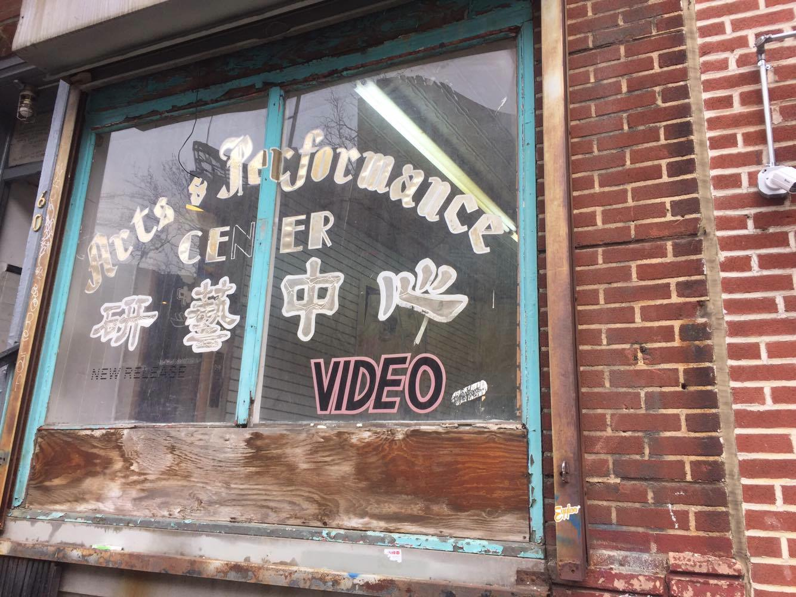

"Get The Right Picture"
"Get The Right Picture""Get The Right Picture"
On May 1st, 2007, Michael Bloomberg, then current mayor of New York, unveiled an anti-piracy and anti-bootlegging public awareness campaign titled “Get The Real Picture: Don’t Buy Illegal DVDs Off The Street”. Partnered with the MPAA, NBC Universal, and other like minded organizations, the Mayor’s Office of Media and Entertainment designed a series of print and broadcast advertisements that treat piracy as a threat to New York’s economy and as an industry that cheats New Yorkers from investing in “good” quality products. This campaign was preceded by a change in legislature, Introductory 382-A (signed during October 2006), that more heavily criminalized piracy — changing it from a civil violation to a criminal misdemeanor punishable by imprisonment. Bloomberg’s bill also specified an up to 6 month imprisonment rule with penalty fines ranging from $1,000 to $5,000, as opposed to the former 15 day sentence with a $250 maximum. The change from penalty to violation allows police officers to make arrests based on eyewitness accounts as opposed to having witnessed the conduct themselves in order to carry out prosecutions.
When this bill was signed, mayor actors in the “Get the Real Picture” campaign joined Bloomberg at City Hall, notably MPAA Vice President and Director of U.S. Anti-Piracy Operations Mike Robinson, Police Commissioner Ray Kelly, and Criminal Justice Coordinator John Feinblatt. Robinson presented the ad campaign produced by the Office of Media and Entertainments: posters to be put up in bus shelters in neighborhoods where piracy was rampant, and broadcasts to screen in community centers and on television. Retrospectively, these advertisement’s approach seems laughably extraneous. These advertisements focus on the “poor quality” of pirated materials in what seems to be a “shaming” campaign that guilts consumers for “killing New Yorkers jobs” and for not investing in the high quality goods New York produces. Quite frankly, this campaign seems to “miss the point” of piracy at large. The monetary accessibility of pirated goods and the diversity of materials piracy markets harbor— notably materials from countries and languages usually excluded from conventional markets — both trump any notion of “quality” the MPAA is holding as a “standard” New York’s citizens should aspire to. In the broadcasts produced, a clip from a pirated film (usually a pirated big-budget US produced film) would be followed by modified MPAA ratings that rate how “poor quality” the pirated film was. Ratings like “PS” for Poor Sound, “OV” for Obstructed View, and “SP” for Stupid Purchase flash onto the green background movie-going viewers can immediately associate with the MPAA. This broadcast’s terribly ineffective attempt at mocking pirated materials backfires and reveals the elitism and the desire to rate/police/shame the communities benefitting from piracy markets.
"Criminals With Camcorders"
At the campaign press release Coordinator Feinblatt spoke about NYC’s Organized Crime Control Bureau’s ongoing collaboration with the MPAA in locating distribution points for piracy around the city, and lauded the resultant 19 trademark counterfeiting arrests and seizure of 195,044 DVDs of 2007’s first term. In addition, Feinblatt described upcoming trainings conducted by the OCCB’s Organized Crime Investigation Division’s Deputy Commissioner of Training in collaboration with the Chief of Patrol to plan and execute “vendor sweeps”. These would be conducted by the inspectors from the Department of Building, Fire Department, and Department of Health and Mental Hygiene alongside NYPD officers who would be involved in “top-to-bottom” inspections of buildings suspected for piracy, and eventually the shut down and seizure of these properties through permissions of nuisance abatement laws. During the press release Mayor Bloomberg also released the following statement:
"Video piracy is not a victimless crime - it kills jobs for New Yorkers. Not only does piracy drive up the costs of videos and movie tickets and harm our economy, but every New York consumer is being cheated by poor quality goods. Instead of buying shoddy pirated videos shot by criminals with camcorders, New Yorkers can support our booming film industry and its 100,000 employees - on and off the screen - by getting the 'real picture' and only purchasing legitimate videos."
“Criminals with Camcorders”. Bloomberg’s statement resonates today with uneasy familiarity, in the midst of Trump’s presidency and anti-immigrant rhetoric that accompanied its institution. The largely anonymous terms “priate” and “bootlegger” often do the trick of erasing the identities of pirates and depoliticizing their actions by severing our understanding of the communities and spaces these “pirates” inhabit. Considering the fact that in 2007 piracy was very much thriving online and was much more driven by inside-industry selling than the lone-wolf actions of “criminals with camcorders”, Bloomberg’s economic argument falls flat, and the NYPD’s on the grounds approach betray concerns beyond the economic implications of piracy.
On July 2004, The Guardian published a piece by Duncan Campbell titled “Introducing Del-Qaida”, an assessment of an Industry Trust for Intellectual Property Awareness (Itipa) “awareness” campaign that falsely claimed terrorist groups were receiving significant funding from piracy. Beyond the economic interests expressed by this campaign, according to Campbell it seems to be taking a cue from Bush's War on Drugs campaign by fueling itself off of suspect statistics and xenophobic sentiments. To think about this campaign and Bloomberg’s as rising from the same interests and anxieties is not too far of a conclusion to draw, even if Itpa’s campaign was more explicit, and clumsy in its execution. It is necessary to understand the planned breakdown and “natural” breakdown of piracy markets as motivated by political actions that targeted immigrants and minority groups as consequence of an elite pursuit for social “improvement”, and which masks the elite desire for social sanitation. The policing and surveillance campaigns that accompanied these “public awareness” campaigns, and their largely unquestioned practices, are the locus in which these desires became mobilized.
With this in mind, we should consider the role of the Organized Crime Investigation Division (OCID) both historically and in Bloomberg's campaign. Although the OCID has been memorialized by television shows and media as responsible for the disruptors of mafia action, it is important to remember that it was founded as a response to the Knapp Commission, a 5 person panel created in the 1970s to investigate corruption within the New York City Police Department itself. The Knapp Commission’s recommendations for the NYPD on its final report in December 1972 included “a change in police attitudes” and that “commanders should be held accountable for their subordinates actions”. The OCID’s actions over its its last 20 years of functioning should has followed their own advice. As Sarah Ryley demonstrated in a piece for the New York Daily News, recently awarded the 2017 Pulitzer Prize for Public Service, the OCID and NYPD (especially the NYPD’s Special Enforcement Units), have been forcing people out of their homes after searches justified by nuisance abatement laws even if after these searches these people were not convicted of a crime. Sarah Ryley’s work focuses for the most part of the abuse of nuisance abatement laws when sex work and drug production is suspected, and her work has for the most part been concentrated in nonwhite minority neighborhoods in Queens and Brooklyn that were victim to this policing.
Policing, Surveillance, and Suspicion
However, in Chinatown the impact of nuisance abatement laws and how they were carried out during Bloomberg’s anti piracy campaign seems no different. Any visitor to Canal Street will find it impossible to acquire pirated materials in what was once the largest hub for piracy in New York. Any vendor I spoke to about whether or not they sold films or music in their shops turned me away immediately and often aggressively. Bloomberg’s campaign had more effects than simply getting rid of piracy in that its surveillance and policing practices created a culture of suspicion and anxiety for shopkeepers and pirates alike. My question regarding films and music in these stores was seen as an unwelcome intrusion and as a reminder of the many times similar questions led to property seizures and imprisonment for vendors in Chinatown. This experience confirmed for me that really speaking about this campaign with people who were victimized by it would require building trust in ways that would perhaps have to overcompensate for the damages of Bloomberg’s campaign-- namely through the justification of my stakes in this project by the people I interacted with’s assessments of my character, which more than often did not suffice.
In fact, for the most part the people who were willing to speak to me about Bloomberg’s anti-piracy campaign were not residents of Chinatown or vendors, but people who lived elsewhere and commuted to chinatown to work. This included Bengali, Somalí, Vietnamese, Mauritanian, and Pakistani workers who commuted into Chinatown from Queens and Brooklyn— some of them formerly involved in movie and film piracy and most of them currently involved in selling counterfeit handbags and clothing. As I sat with three former pirates in a corner of Canal street, they would point out for me the men they suspected to be undercover cops patrolling their shops. The presence of undercover cops is not something unknown to the Chinatown community— in fact, the New York Times has a significant amount of coverage of undercover cops’ experiences handling counterfeit and handbag busts in Chinatown. In fact, at one point, watch towers stood on the corner of Canal Street and Broadway, the threat of undercover cops was a completely justified sentiment, and piracy arrests were common occurrences gossiped about by neighbors. However, when these undercover cops were pointed out for me, I could not help but wonder how much of this suspicion is backed by actual cop presence since the policing practices backed down. According to the former pirates I spoke to, investigators from the Department of Building, Fire Department, and Department of Health and Mental Hygiene were equally involved in policing these areas and reporting piracy to officials from the OCID and NYPD. These former pirates I spoke to explained their policing as stemming from the economic concerns, but they also spoke about it as coming from discrimination and xenophobia. Often, non-Chinese pirates would explain that mandarin speaking and cantonese speaking members of Chinatown ratted them out to police and blamed them for the illicit activities they were equally complicit in.
A very similar story was communicated to me by a member of the WOW Project, a cultural center located in the longest running storefront in Chinatown. This establishment represents an entirely different side of Chinatown. Owned by an older, cantonese speaking family that immigrated 98 years ago to New York, this storefront, Wo and Co, sells beautiful antique goods made in Hong Kong and transported to New York. Wo and Co prides itself on being a space that has supported the arts in Chinatown, that has made quality a priority, and that has sought to protect and conserve Chinatown as a historic center of New York. For this reason, the newer Mandarin speaking immigrants who came into Chinatown and bought “poor quality” goods, gang violence, illegal practices, police suspicion, and the potential for land seizures to Chinatown were often rejected by Chinatown community members like those who frequent Wo and Co. It is interesting to note how there is an intersection here in the quality discourse used by Bloomberg’s campaign and that used by Wo and Co, both with an entirely different agenda, but perhaps in a similarly discriminatory fashion.
Piracy and Gentrification in Chinatown

Just two blocks away from Wo and Co there is a storefront with the word “VIDEO” pasted on the window alongside a larger title of “Arts and Performance Center”. This space is easily confused to be an empty video store, but it actually houses a gallery appropriately called New Release. When the gallery owner found this space, it had been abandoned since 2002 and was being used by the landowner as a storage space. However, the gallery owner found out from people in the neighborhood that it had been an Italian owned video shop, previous to passing to Chinese owned video shot, and being abandoned. Little else is known at the moment. The name New Release pays tribute to the story of this space, and the owner even made it a point to keep the panelling in which video materials were previously stacked upon in the store.

However, now paintings, statues, and videos are supported by this panelling. The curator of the Gallery even made it a point to “honour” the space’s past by having the first show curated in it be a “video” show in which artists and friends she knew submitted homemade videos. In some sense, this seems to me an appropriative gesture made by an institution that is currently involved in the gentrification of Chinatown. The image of this gallery functioning in a space which could very well have been a storefront seized by the OCID. With this in mind, talk in Chinatown suggests that property seizures due to piracy have been fueling Chinatowns gentrification— this was suggested by nearly everyone I spoke to. Although making an argument like this hold will require a deep investigation of former court cases and property seizures, it is safe to say that it would not be out of the ordinary.
Laura Cadena
Columbia College '18, Bachelor of Arts in Anthropology